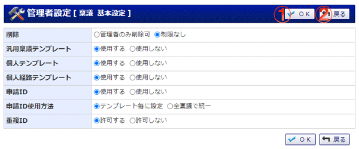

稟議の基本設定を行う画面です。

機能説明
ＯＫボタン基本設定確認画面へ遷移します。 |
戻るボタン遷移元の画面へ遷移します。 |
表示・入力項目説明
削除
削除を許可されたユーザは、自分が申請を行った稟議の内、完了状態となっているものを削除することができます。
汎用稟議テンプレート
汎用稟議テンプレートの使用を許可しない場合は、個人テンプレートも使用することができなくなります。
また、既に汎用稟議テンプレートを使用して草稿へ保存した稟議は申請できなくなります。
個人テンプレート
汎用稟議テンプレート「使用する」が選択されている場合のみ表示されます。
汎用稟議テンプレートの使用を許可しない場合は、既に個人テンプレートを使用して草稿へ保存した稟議は申請できなくなります。
個人経路テンプレート
汎用稟議テンプレートを使用して作成した稟議で個人経路テンプレートを使用し、それを草稿へ保存した場合、個人経路テンプレートの使用が許可されていない場合でもその稟議は申請可能です。
申請ID
申請IDを使用するか選択します。
申請ID使用方法
申請IDを使用する場合に、どの申請IDを使用するかの設定を、各テンプレートで設定するか全ての稟議で統一するのか選択します。
重複ID
申請IDを発行する際、既存の申請IDとの重複を許可するかどうかを選択します。